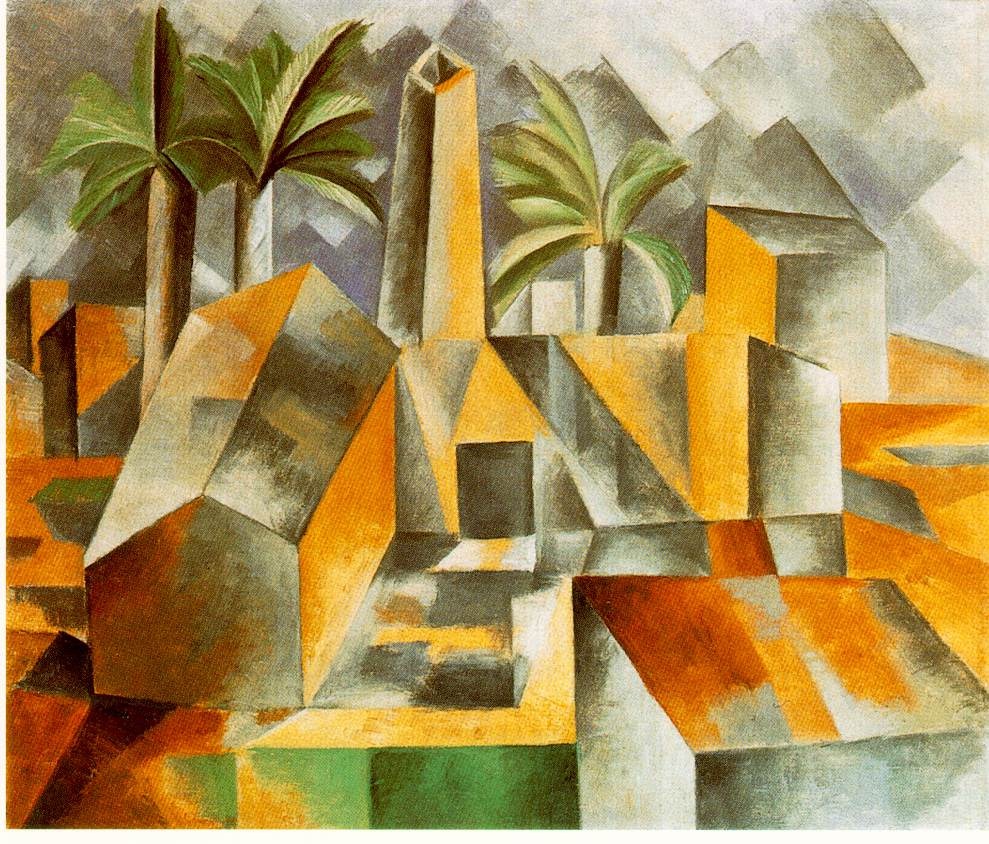

Nel 1909 Picasso trascorre
l’estate in Spagna, a Horta de Ebro. Qui, di fronte alle forme severe e
rudi del villaggio, nascono i primi paesaggi cubisti. Sono ancora evidenti
i volumi e la prospettiva, non nel senso tradizionale della convergenza
illusoria verso il punto di fuga, ma come visualizzazione della conoscenza
mentale della realtà.
Picasso rende una realtà
solida e ordinata, che egli cerca di “capire” attraverso la “forma”, perché
è questa che distingue il significato di un oggetto da quello di
un altro. In questa fase il colore ha poca importanza, si limita a pochi
toni, per lo più bruni.